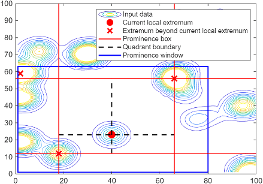

islocalmax2
Description
[
also returns the prominence corresponding to each element of TF,P] = islocalmax2(A)A. For more
information about the prominence calculation, see Algorithms.
___ = islocalmax2(
specifies options for finding local maxima using one or more name-value arguments with
either of the output argument combinations in the previous syntaxes. For example,
A,Name=Value)TF = finds no more
than four of the most prominent local maxima.islocalmax2(A,MaxNumExtrema=4)
Examples
Create a matrix, and visualize the matrix using a contour plot.
A = peaks; contour(A) colorbar

Determine the locations of the local maxima.
TF = islocalmax2(A);
Use the local maxima indicator to determine the value of each maximum.
maxval = A(TF)
maxval = 3×1
3.7573
8.0752
3.5823
Plot the local maxima on the contour plot.
[X,Y] = meshgrid(1:49,1:49); hold on plot3(X(TF),Y(TF),maxval,"red.",MarkerSize=12)

Create and visualize a matrix with a flat region.
data = peaks; A = clip(data,-Inf,5); contour(A) colorbar

Find the local maxima. By default, TF is 1 (true) for only the center point of the flat region and TF is 0 (false) for all other points on the flat region.
[TF P] = islocalmax2(A);
To select only the point on the flat region with the smallest linear index as the local maximum, specify the FlatSelection name-value argument as "first".
[TF2 P2] = islocalmax2(A,FlatSelection="first");To select all points on the flat region as local maxima, specify FlatSelection as "all".
[TF3 P3] = islocalmax2(A,FlatSelection="all");Compare the results of the flat region selections by visualizing the extrema.
[X,Y] = meshgrid(1:49,1:49); tiledlayout(2,2) nexttile contour(A) colorbar hold on plot3(X(TF),Y(TF),A(TF),"r.",MarkerSize=12) title("Center Point on Flat Region") nexttile contour(A) colorbar hold on plot3(X(TF2),Y(TF2),A(TF2),"r.",MarkerSize=12) title("First Point on Flat Region") nexttile contour(A) colorbar hold on plot3(X(TF3),Y(TF3),A(TF3),"r.",MarkerSize=12) title("All Points on Flat Region")
![Figure contains 3 axes objects. Axes object 1 with title Center Point on Flat Region contains 2 objects of type contour, line. One or more of the lines displays its values using only markers Axes object 2 with title First Point on Flat Region contains 2 objects of type contour, line. One or more of the lines displays its values using only markers Axes object 3 with title All Points on Flat Region contains 2 objects of type contour, line. One or more of the lines displays its values using only markers](../../examples/matlab/win64/CustomizeLocalMaximaDetectionAtPlateauExample_02.png)
Only the local maxima indicator changes when you specify FlatSelection. The prominence of all data points is the same for all values of FlatSelection.
isequal(P,P2,P3)
ans = logical
1
Create a matrix with some noise, and visualize the matrix using a contour plot.
data = peaks; data = data + randn(49)*0.3; A = clip(data,-Inf,5); contour(A) colorbar

Find the local maxima and plot them on the surface plot. By default, islocalmax2 finds all local maxima whose prominence is greater than 0.
[TF P] = islocalmax2(A);
To understand the prominence of the local maxima, sort the unique prominence values.
maxP = sort(unique(P(:)),"descend")maxP = 143×1
5.7516
3.9830
3.3811
2.6829
1.7200
1.2871
1.2853
1.1382
1.1128
1.0921
1.0353
1.0334
0.9606
0.9426
0.9143
⋮
Ignore the local maxima that are a result of noise by finding only the three most prominent local maxima. When you specify the MaxNumExtrema name-value argument, the points in a flat region are jointly considered a single maximum point.
TF2 = islocalmax2(A,MaxNumExtrema=3);
Find local maxima whose prominence is greater than 1.
TF3 = islocalmax2(A,MinProminence=1);
Find local maxima whose prominence is greater than 3.
TF4 = islocalmax2(A,MinProminence=3);
Compare the results of the prominence filters by visualizing the extrema.
[X,Y] = meshgrid(1:49,1:49); figure tiledlayout(2,2) nexttile contour(A) colorbar hold on plot3(X(TF),Y(TF),A(TF),"r.",MarkerSize=12) title("All Local Maxima") nexttile contour(A) colorbar hold on plot3(X(TF2),Y(TF2),A(TF2),"r.",MarkerSize=12) title("Three Most Prominent Maxima") nexttile contour(A) colorbar hold on plot3(X(TF3),Y(TF3),A(TF3),"r.",MarkerSize=12) title("Minimum Prominence 1") nexttile contour(A) colorbar hold on plot3(X(TF4),Y(TF4),A(TF4),"r.",MarkerSize=12) title("Minimum Prominence 3")
![Figure contains 4 axes objects. Axes object 1 with title All Local Maxima contains 2 objects of type contour, line. One or more of the lines displays its values using only markers Axes object 2 with title Three Most Prominent Maxima contains 2 objects of type contour, line. One or more of the lines displays its values using only markers Axes object 3 with title Minimum Prominence 1 contains 2 objects of type contour, line. One or more of the lines displays its values using only markers Axes object 4 with title Minimum Prominence 3 contains 2 objects of type contour, line. One or more of the lines displays its values using only markers](../../examples/matlab/win64/FilterNoiseExample_02.png)
Alternatively, you can use the smoothdata2 function to remove noise prior to finding the local maxima.
Create a matrix of data with one isolated peak and many peaks with high density elsewhere in the data.
rng("default") data = zeros(100); data(30,30) = 1000; data = smoothdata2(data,"gaussian",50); smallPeakLoc = randi(10000,1,400); tempData = zeros(100)+1; tempData(smallPeakLoc) = abs(randn(1,400))*3; tempData(1:50,1:50) = 0; A = data+tempData; A = smoothdata2(A,"gaussian",5); contour(A) colorbar

Because of the high density of peaks elsewhere in the data, islocalmax2 underestimates the prominence of the peak at (30,30).
TF = islocalmax2(A,MaxNumExtrema=10); [X,Y] = meshgrid(1:100,1:100); contour(A) colorbar hold on plot3(X(TF),Y(TF),A(TF),"r.",MarkerSize=20)

To limit the impact of distant peaks on the prominence calculation, specify a prominence window. The isolated peak at (30,30) is now marked as a local maxima.
TF2 = islocalmax2(A,ProminenceWindow=50,MaxNumExtrema=10); contour(A) colorbar hold on plot3(X(TF2),Y(TF2),A(TF2),"r.",MarkerSize=20)

Input Arguments
Name-Value Arguments
Output Arguments
Algorithms
islocalmax2 identifies all local maxima in the input data and follows
these steps to compute the prominence of each local maximum:
Determine the data to use to compute the prominence.
If the
ProminenceWindowname-value argument is specified, use its value to draw a rectangular window of data around the current local maximum. Otherwise, use a rectangular window that includes all of the data.
Determine the prominence box.
Move vertical lines left and right from the current maximum until encountering a higher maximum or the edge of the rectangular window.
Move horizontal lines up and down from the current maximum until encountering a higher maximum or the edge of the rectangular window.
Compute the prominence.
Divide the prominence box into four quadrants centered on the current local maximum.
Identify the lowest value within each quadrant.
Use the highest of these quadrant minimum values as the basis value. The prominence is the absolute difference between the height of the current local maximum and the basis value.

Version History
Introduced in R2024a